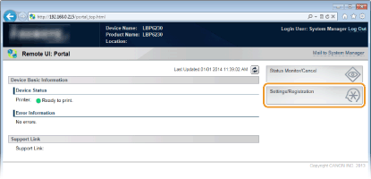
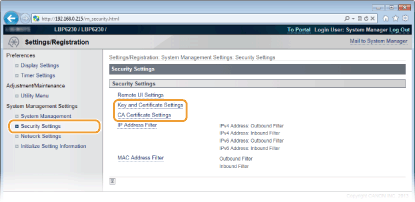
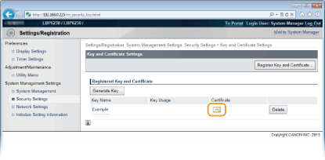
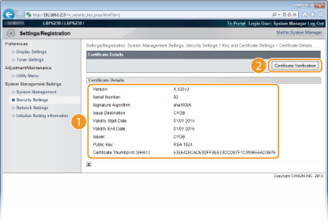
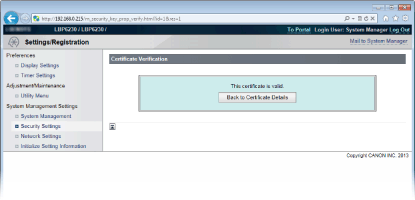

Verifying Key Pairs and CA Certificates
Once key pairs and CA certificates are registered, you can view their detailed information or verify their effective dates and signature.
1
Start the Remote UI and log on in System Manager Mode. Starting the Remote UI
2
Click [Settings/Registration].

3
Click [Security Settings]  Click [Key and Certificate Settings] or [CA Certificate Settings].
Click [Key and Certificate Settings] or [CA Certificate Settings].
Click [Key and Certificate Settings] to verify a key pair, or [CA Certificate Settings] to verify a CA certificate.

4
Click the icon for the key pair or CA certificate that you want to verify.

 |
Certificate details are displayed.
|
5
Check the certificate details, and click [Certificate Verification].

|
|
The result from verifying the certificate is displayed as shown below.
 |